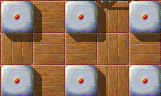
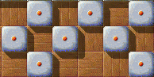

|
In our first independent level article, we want to talk about and look behind the curtains of “Patterns of Impulse” (IV/44). Have fun with a comment from Alain and one from the author! My level of the moment
I recently came across “Patterns of Impulse”,
which is not the kind of level I usually like (too frenetic for me)
but trying to solve it gave me a very nice surprise that I will try to
explain here:
After having laughed at the show made by the frantically moving impulse stones
(look also at “Stay There!” or “Bendixxon”, the last one
without impulse-stones), I suddenly
discovered the mystical truth about this level:
It illustrates almost perfectly L. Boltzmann's kinetic
theory of thermodynamics!
Howzsat? Well, just imagine the impulse-stones are moving particles
(the free path anyway is not much: less than one unit length, wiz the
length of a cell in the landscape) which constitute an amorph solid at
the beginning of the level: Nothing moves so that the initial
temperature is the absolute zero. Then comes Blackball who caresses
slightly one of the impulse stones, and suddenly everything explodes!
This can be interpreted as the solid suddenly melting (the fluid is not
compressible enough to be a gas, but rather a liquid) and if ever
Blackball tries to swim into this liquid, a brownian motion crashes
him, so he'd better stay in one of the shelters. Finally after some
time (and some help from Blackball here and there) the fluid cools down
and freezes again, keeping a crystal-like structure (more on this later)
and freeing a path (hopefully) to the oxyd stones …
Usually, playing an Enigma level is being always active, and often
rapid, which requires a lot of concentration and does not really let
the player see what happens. But for this level, during the cooling of
the fluid, one can observe several interesting phenomena:
When two impulse stones meet, say one moving to the right and the other
to the left, they endure a shock like real particles, but the shock is
perfectly elastic: After the shock, every one of the separating
particles comes back to where it came, so that the total momentum is
conserved. But if only one of the particles is moving, it gives its
momentum to the other one, but instead of stopping, it comes back
as well:
The total momentum is doubled! We could call this a more-than-elastic shock. The “worst” case is when an impulse-stone hits the central stone of a group of three, which after the shock begin to move all of three, plus the initial moving stone, which comes back, so that the momentum is quadrupled!

When the stones don't move anymore, they tend by themselves to be
arranged in a regular pattern, which we may call a crystal, and looks
typically like this.
I propose to call this crystal structure the
cubic system because it looks like a cubic crystal viewed from above. In this
crystal, the distance between two neighbours is twice the unit length. But there
is a more compact, a rarer, crystal structure which is stable (temperature
zero), which I compare to the diamond structure.

(one particle is
missing on the lower line: impossible to move another here without touching one
of the stones of the middle line, which would … arrgh!)
In this crystal
structure, every particle has 4 neighbours like in the cubic structure,
but the distance between neighbours is the square root of 2, times the
unit length: About 70% of the preceding. Actually there is a still more compact
stable structure, where the space is completely filled with impulse-stones, but
to build it would require much more pressure than Blackball could furnish. In
this structure that I would be tempted to call the “neutron star
structure”, the
distance between neighbours is simply the unit length, then 70% of the diamond
and half of the cubic structure.
There is more to say about these
structures: Imagine a row of impulse-stones in an otherwise empty terrain, each
occupying a cell with odd abscissa: Cells 1, 3, 5, etc. Then along comes
Blackball at position 0 who pushes impulse-stone at 1 to position 2: The
impulse-stone excites the one at 3, who goes to 4 and sends it back to position
1. Then the stone at 4 sends the one at 5 to 6, which makes it resume its
equilibrium position at 3, etc.: What we see is the propagation of a pressure
wave in this pattern, which I would call a phonon. I have also observed some
kind of cavitation (bubbles of void moving in the fluid), and temperature
fluctuation. One can even see the ice crystal grow in a still moving fluid, and
sometimes partly melting. Also when two parts of the liquid freeze in
incompatible crystal structure, a fault appears in the crystal which can
propagate in the solid …
All of this while waiting that the situation calms down!
Thinking to the moving switches of “How solid?”, “The Flagstone
Reaper” and “The Dark Outside” I begin to realize that Andreas
has the dangerous gift of giving life to strange
creatures (half-robot and half-alien) and observing their independent evolution,
not unlike the hero from a Mary Shelley book …
Brrr!
The first version of “Patterns of Impulse” I still have on my hard
drives dates back to May the 30th, 2005. In my internal nummeration, it was
number 21, and hence a relatively late level, but first things first …
As a child, I played Oxyd 1 completely through. It was a great experience, and
I think it formed my character in quite a way, as it taught me that patience
and hard work really do pay off. But after I completed level 100, and didn't
find anyone to play through the link games completely, I quickly
forgot about Oxyd, as I didn't know about the follow-up games.
Years passed, so did the games I played. I switched from Windows to mainly
Linux, when I started to study. And then, on some happy day in 2004 or
2005, I found Enigma 0.81 through the linux distribution SuSE by random. It
immediately caught my attention, and I started playing. But I was also curious,
was it still in development? Many projects get abandonded over the years. Not
so with Enigma. I quickly found version 0.92 on the internet, and as I wasn't
able to compile it, I played it on Windows. But I wanted more—and looked at
the level files. They seemed easy to understand, and the BlackBallEditor helped
me to write some first simple experiments.
The first one, my number 1, really was just an experiment. Number 2 already grew
more interesting: It used reversed friction, like in the “Nightmare”
series, but without death stones. It was one of those levels which solved
themselfes. Then I got the idea to realise Lissajous curves in a level. Indeed,
my first motivation was similar to what I later realised as
“Lissajous”, but with a rotor instead of a moving death stone. As I
wasn't good enough to program this, I simply copied some code from Nat's
“When Gravity Fails” and created my first real level, which would
later be called “Lissajous' Revenge” (yes, the revenge was first,
I chose the titles later). What followed, were “Spaceleast”
(6) and “Spaceless” (7), “Laser Castle” (8), “Friend
or Foe?” (9), “Laser Path” (11), “Robin's Wood” (13),
“Tropical Island” (14: Yes, “Robin's Wood” and
“Tropical Island” both came from the same idea of realising some
theme in Enigma), “Turn Around” (15),
“Lissajous” (17, finally), “Moure-Switches” (19, I wanted
to create a code-puzzle level) and lots of ideas that never made it to mature
levels. At some point I decided to write 16 levels to be published—16 being
the square of my favourite number. This would be the first time for me to really
publish something I programmed. Counting the levels above, we get 11.
Then came “Patterns of Impulse”, as number 21. I don't really know
how this idea developped. It surely wasn't planned, and I think, I just played
around a bit, putting some movable impulse stones together, randomly, but with
some respect to symmetry, just to see how they would interact. I love
(mathematically) chaotic behaviour, this was already the driving force for
“Laser Castle”, and would later lead to “Orbitting” and
“Chess, Bugs & Rock'n'Roll”. Chaos has the fascinating habit of
creating order out of itself, order of a more primordial kind than what we
normally understand about this concept. Patterns emerge from chaos—and
exactly this was what happened with the impulse stones. It was fascinating.
By the way, I dug up the first version of “Pattern of Impulse” and
dressed it for Enigma 1.01. You can download it here.
There already were oxyd stones, I had put some into the edges of the level. At
first, they just were there to appease BlackBallEd, which wouldn't let me save
the level without setting oxyd stones. But then I tried to reach the oxyds
through the evolving chaos. And failed. After watching the moving impulse
stones, it became an interesting challenge to open the oxyd stones as well.
Though I noticed, that the level wasn't perfect yet. It needed some control,
just a little bit. I wanted to force the gamer to control the chaos, to keep it
quiet. A good dexterity-player would open the stones just by sneaking through
the ubiquitous chaos—that wasn't what I saw to be the more interesting
challenge.
So I removed four of the impulse stones (chosen to meet the design), and added
the doors to shut the oxyds by adding triggers and stones in the (invisible)
screens above and below. I used this technique before, in “Laser
Castle”, and combined it here with timer stones to make sure that the
doors would wait a moment before opening the way to the oxyds again. It worked
out well. I thought about a title. I wanted to point out at the patterns
visible in the activated level. At that time I read about a show in the Star
Trek series called “Patterns of Force”, which I never saw, and which
is considered one of the worst Star Trek shows ever; but I stuck to the title.
I quickly settled with “Patterns of Impulse” perfectly describing the
level, as I think.
I added an easy mode and on July 1st, 2005, I send “Patterns of
Impulse” and 15 other levels to the devel mailing list, with the good
feeling that work has been done and now I'd be through with Enigma and could go
on with other things. If it wasn't for this persistent discussion about ratings
…
|